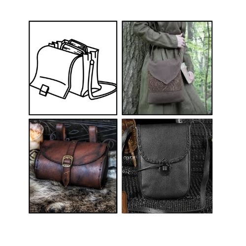
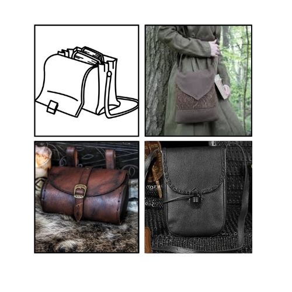
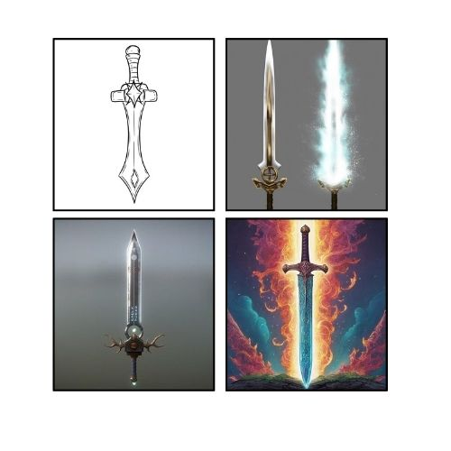
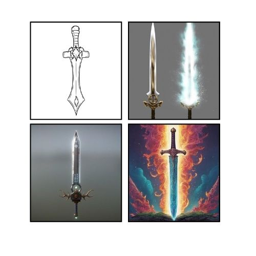

Her full name is Emilia, but rarely anyone calls her that. She has an adoptive mother and two younger adoptive sisters. She would never feel regret or frustration over watching over her sisters or serving the town growing up -- she would never run from the responsibility to take care of what was important to her.
But she will feel regret when she leaves home to pursue her own dreams. She'll feel like she can't come home unless it's with riches and accolades -- something to prove to her family that she and they deserve better. She'll feel heartbroken missing the ones she loves. She's fearless and curious, loving to learn. She'll want to make her mark on the world to be worth all the trouble she's caused in her life.
Ko'en is loyal almost to a simple degree -- he believes in who he chooses and trusts his judgments. His unconditional trust gives her a faith in herself she's never had before and a friendship that's never come so easy. As their relationship evolves into romance, the trust they foster carries them through the most traumatic hardships.
Wants
Lia wants to fulfill her dream of becoming a scientist in the field of studying ancient, magical wild plants. She craves external recognition and validation for that dream coming true, believing that will somehow prove to herself and her family that she can be more than the small-town doctor her mother raised her to be.
Needs
What Lia needs is reassurance. Not that she was lacking a support system, but her desire for validation stems from always being independent and working hard. Responsibility always being put on her made her think what she herself offered was never enough, self-worth defined by accomplishments. What she needs to learn is that the greatness she thinks she needs to prove is already within her and needs no validation.
 
